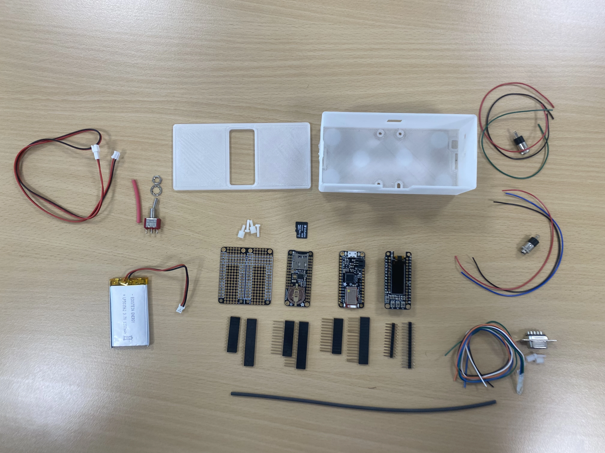
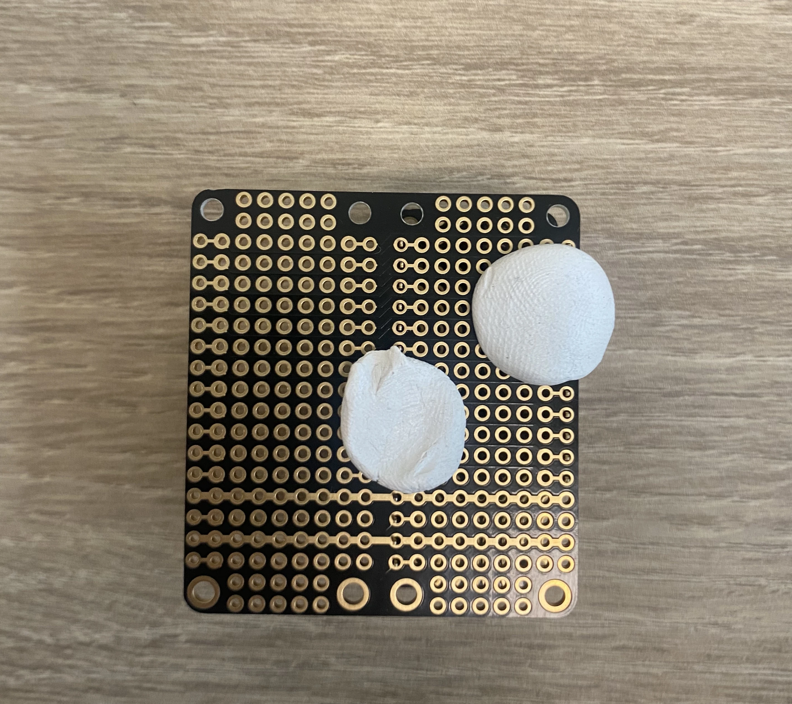
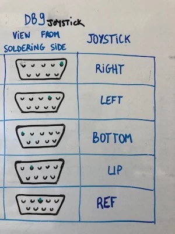

Guide d'assemblage de la BaahBox
Ce guide vous explique comment assembler votre BaahBox à partir des composants électroniques et des pièces imprimées en 3D.
Matériel requis
Composants électroniques principaux
Feather M0 Bluefruit (Adafruit Feather M0 Bluefruit LE)
Carte de développement principale avec connectivité Bluetooth Low Energy.
Avec broches empilables longues : Voir sur Adafruit
FeatherWing de prototypage double (proto shield)
Pour le prototypage et les connexions personnalisées.
Avec broches empilables courtes : Voir sur Adafruit
FeatherWing écran OLED 128x32 (assemblée)
Affichage pour les informations système et la navigation.
Optionnel : Vous pouvez ajouter une batterie et un interrupteur pour une utilisation sur batterie.
Le DB9 sert à connecter un capteur à plusieurs sorties (numériques). Vous pourrez y brancher par exemple un joystick de borne d'arcade.
Consultez la liste complète du matériel pour tous les détails sur les composants nécessaires.
Impression du boîtier
Le design de notre boîtier est une adaptation de celui proposé par Adafruit pour ses cartes Feather.
Téléchargez les fichiers STL nécessaires :
Conseils d'impression : Adafruit propose des réglages recommandés pour Cura et Simplify3D que nous vous conseillons d'utiliser.
Assurez-vous d'imprimer toutes les pièces nécessaires avant de commencer l'assemblage.
Préparation des cartes électroniques
Étape 1 : Soudure des broches
Commencez par souder les broches sur les différentes cartes pour pouvoir les empiler.
Attention : Faites attention au sens des cartes. Il y a un côté avec moins de broches. Assurez-vous de bien repérer ce côté sur la proto shield.
Voici les cartes avec leurs broches avant soudure :
Feather M0 avec broches
Proto shield avec broches
Écran TFT avec broches
Astuce : Pour souder les broches bien parallèles, retournez la carte avec les broches en place, et utilisez de la patafix pour éviter qu'elles ne bougent pendant la soudure.
Étape 2 : Empilement des cartes
Une fois les broches soudées, vous pouvez empiler les cartes dans l'ordre suivant (de bas en haut) :
- La proto shield (en bas)
- La Feather M0
- L'écran TFT (en haut)
Feather M0 soudée
Vue de côté de l'empilage
Empilage partiel
Empilage complet
De bas en haut: la proto shield, puis la Feather M0, la SD shield, et la TFT.
Installation de la connectique
Nous allons maintenant connecter les prises jack stéréo et le connecteur DB9 à la proto shield.
Connexion du DB9
Le connecteur DB9 permet de brancher un joystick ou d'autres périphériques à plusieurs entrées.
Pour le câblage du DB9, vous aurez besoin de :
- 4 fils de couleurs différentes pour deux caneaux analogiques (par exemple : les axes vertical et horizontal d'un joystick)
- 1 fil noir pour la masse (GND)
- 4 fils pour 4 contacteurs (par exemple : bouton d'un joystick)
Suivez le schéma de câblage ci-dessous pour connecter le DB9 à la proto shield :
Montage final
Une fois toutes les connexions effectuées, vous pouvez procéder au montage final dans le boîtier imprimé en 3D.
- Placez les cartes empilées dans la partie inférieure du boîtier
- Fixez les cartes avec les vis fournies
- Installez les connecteurs jack et DB9 dans leurs emplacements respectifs
- Si vous utilisez une batterie, installez-la dans le compartiment prévu à cet effet
- Fermez le boîtier avec la partie supérieure
- Vissez les deux parties du boîtier ensemble
Vue du boîtier fermé

Vue du connecteur DB9
Votre BaahBox est maintenant assemblée. Vous pouvez passer à l'installation de l'application et à la configuration de l'application.
Pour installer l'application et configurer votre BaahBox, consultez le manuel d'utilisation.